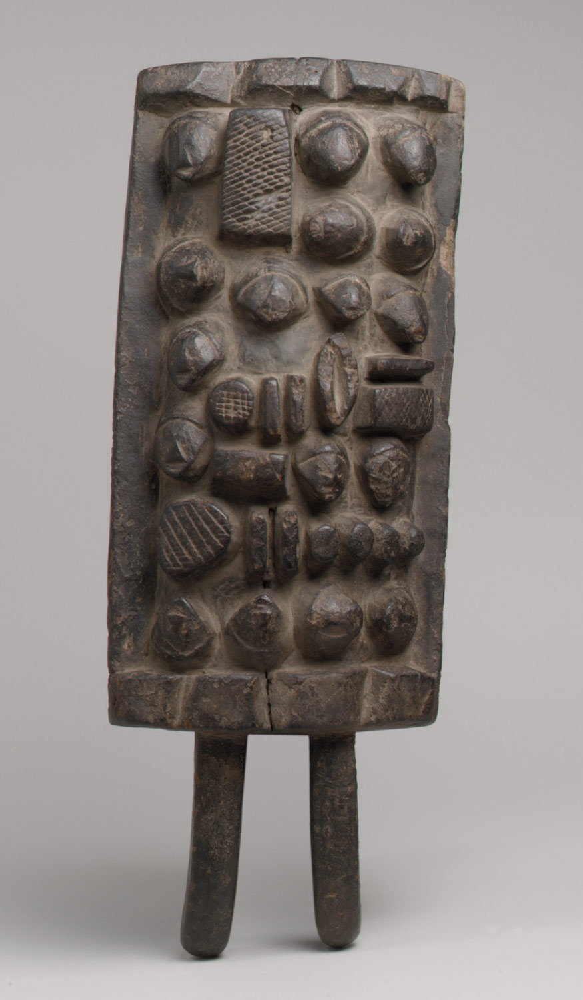

In response to Prompt A: Throughout human history, people of all cultures and civilizations have invented many different ways of record-keeping. By far the most revolutionary form of record-keeping is spoken and written language, but there are nonetheless many other forms that have developed over time. Mathematics, drawing, painting, tattooing, and even making marks in a stick, can all be forms of record-keeping. But no matter what form it’s in, the human ability of record-keeping has always had a massive effect on society. The Akkadian Cylinder Seal from Mesopotamia, the Rhind Mathematical Papyrus from Egypt, and the Lukasa Memory Board from the Luba are great examples of how record-keeping can truly shape society and its functions. A common way of signature in Mesopotamia during the Akkadian period (c. 2250-2150 BCE) was to roll an engraved stone cylinder onto an object so that it left a marking like a seal. A notable example of the cylinder seal is the one referred to as “hunting scene,” which is kept in the Metropolitan Museum of Art. The owner of this seal was named Balu-ili, and he was a court official and a cupbearer. Balu-ili presumably used his stone cylinder seal to sign tablets for official court-related purposes. The Met outlines another use in their description of the object, proposing that when “seals were impressed on sealings — lumps of clay that were used to secure doors and the lids of storage jars— the seal impressions served to identify their owner and protect against unauthorized opening.” In this society the cylinder seal allowed individuals to assign authority to the statements and rules written on tablets. This gave those who could write cuneiform and officially sign their writings with cylinder seals the ability to control the people of Mesopotamia. And thus an organized society developed comprised of full-time farmers, professional soldiers, government officials, scribes, artisans, priests, and slaves. The cylinder seal is a part of the overall writing and governing system of Mesopotamia, the earliest civilization. Another artifact that is indicative of a major societal development is the Rhind Mathematical Papyrus from the Second Intermediary Period (c. 1550 BCE) of Egypt. The document is essentially a textbook for mathematics that scribes would have likely studied. Its curator at the British Museum states that “the text includes eighty-four problems: tables of divisions, multiplications, and handling of fractions; geometry, including volumes and areas; and miscellaneous problems.” In addition to demonstrating Egyptian mathematical knowledge from the time, the papyrus is also notable as a historical document. Due to the dates written on both the front and back, historians are able to extrapolate an incredible amount of information about the politics and conflicts of the time. The Lukasa memory boards present a form of complex record-keeping aided by spoken language but otherwise using no written language at all. Through the reliefs and other designs on the boards, complex information about the political system, history of the state, and information about various territories are recorded. Only a select group known as the Mbudye can read them. The Metropolitan Museum of Art describes the Mbudye as “a council of men and women charged with sustaining and interpreting the political and historical principles of the Luba state. As authorities on the tenets of Luba society, mbudye provide a counterbalance to the power of kings and chiefs, checking or reinforcing it as necessary.” Thus the lukasa have a significant role in society as they essentially create another branch of power, encouraging a system of “checks and balances,” similar to that theorized by the writers of the US Constitution. These objects demonstrate how other forms of record-keeping have shaped society in ways similar and different to writing. By examining the cylinder seal, Rhind papyrus, and lukasa, it is clear that the idea society must be organized around a written document is a relatively new and Western idea. In response to Prompt C: People have been mimicking human form in sculpture since as early as the Paleolithic period of the Stone Age. The Woman of Willendorf is one of the oldest known examples of this, dating to 22,000 to 21,000 BCE. During the Early Dynastic period of Mesopotamia (2900 to 2350 BCE), “votive statues” were commissioned by elites to represent their essence in temple if they were absent. These statues are unique in that they represent people who were not royalty. Though they have variation in terms of size, gender, and decoration, the facial features are virtually indistinguishable. Compare this with the much later Augustus of Primaporta, a Roman statue from early 1st century CE, which was made for a very different purpose. This statue has a very distinguishable face that would have been known across the Roman Empire at the time. In addition to the face, the statue is laden with detail to both identify and glorify the Roman Emperor Augustus. Both the votive figures of Mesopotamia and Augustus of Primaporta convey complex information about the civilizations that made them. By comparing and contrasting, we can see how they are indicative of their respective cultures and societies. The idea that if you cannot make it to the temple to worship you can have a statue placed to worship instead is unique to Mesopotamia. There is no Roman equivalent. However, they both share the underlying concept that the statues contain within them the “essence” of the person they represent. In the case of Augustus’ statues, they are meant to impose his essence, and his power, all across the Roman Empire. But even in this way they differ, as the votive figures are meant to display a person’s essence to the gods, whereas Augustus’ statues are meant to display his essence to his subjects. These intentions are clear when looking at the sculptures. The votive figures are less detailed and less distinguishable from each other partially because they weren’t made for other people--they were made for the gods. This meant that detail and distinguishability was much less important because surely the gods would know who’s who. Augustus of Primaporta was made to impose over many citizens, leaving a common and lasting impression of power and heroism. Where the votive figures were made for the gods, Augustus of Primaporta was intended to make him look like a god. This is evident in the incredibly detailed and decorated cuirass and cloak that he wears. According to the Vatican Museum: “The reliefs on the cuirass show a Parthian king in the act of returning to a Roman officer the standards lost by Crassus in 53 B.C. during the Battle of Carrhae; at the sides are figures from the two provinces of the empire. The whole scene is inserted into a cosmic landscape: at the top one can see the personification of the Heavens in the centre, with the chariots of Apollo and Aurora alongside. At the bottom one can recognise Diana riding on the back of a hind and, in the centre, the goddess Earth.” Through Augustus’ cuirass, he is elevated by the presence of the gods and heavenly imagery. Almost everything about this statue is meant to elevate Augustus, from his youthful and handsome face to the pose he is striking. By looking at the Early Dynastic votive figures of Mesopotamia and Augustus of Primaporta it is clear that these statues had very different uses and origins. One is indicative of a society where your presence before the gods was highly valued while the other is indicative of a vast and sprawling empire which wanted to impress upon its people the importance and authority of its leader.
Planet Earth, Solar System, Milky Way Galaxy 30.10 AU